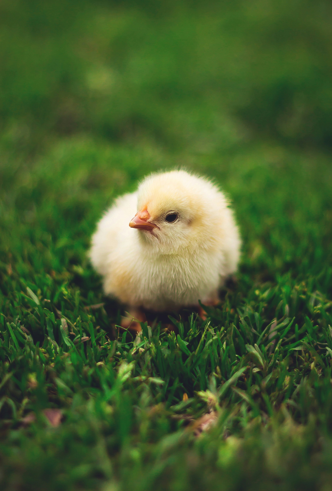

1 -بيكبر على عمر 45 يوم ٠ 2 -لديه ثالث مراحل علف ، المرحله االولى بادي 23 ، %المرحله الثانيه نامي 21 ، %المرحله الثالثه ناهي 19 %٠ 3 -المرحله االولى من العلف يتم اكلها لمده 15 يوم ،المرحله الثانيه من العلف يتم اكلها لمده 10 ايام ، المرحله الثالثه يتم اكلها لحد نهايه الدوره ٠ 4 -لديه خمس مراحل ادويه ، المرحله االولى دواء االستقبال ، المرحله الثانيه فيتامينات ، المرحله الثالثه زياده الفيتامينات ، المرحله الرابعه رافع مناعه ، المرحله الخامسه زياده الوزن ٠


1-بيكبر على عمر شهرين ٠ 2-لديه مرحلتين من العلف ، المرحله االولى بادي 23 ، %المرحله الثانيه بادي نامي 21 ونص% ٠ 3 -المرحله االولى من العلف يتم اكلها لمده 25 يوم ، المرحله الثانيه من العلف لحد نهايه الدوره ٠ 4-لديه خمس مراحل ادويه ، مرحله اولى دواء استقبال ، المرحله الثانيه فيتامينات ، المرحله الثالثه زياده فيتامينات ، المرحله الرابعه رافع مناعه ، المرحله الخامسه زياده وزن ٠ 5 -بيبيض بعد اربع شهور او خمس شهور ٠ 6 -لونه بيكون احمر ، ويبيض البيضه الحمراء ٠
1-بيكبر على العمر من شهرين ونص ٠ 2 -لديه مرحلتين من العلف ، المرحله االولى بادي 23 ، %المرحله الثانيه بادي نامي 21ونص% ٠ 3 -المرحله االولى من العلف يتم اكلها لمده 25 يوم ، المرحله الثانيه لحد نهايه الدوره ٠ 4 -لدي خمس مراحل ادويه ، المرحله االولى دواء االستقبال ، المرحله الثانيه فيتامينات ، المرحله الثالثه زياده فيتامينات ، المرحله الرابعه رافع مناعه ، المرحله الخامسه زياده الوزن ٠ 5 -بيبيض بعض خمس شهور او خمس شهور ونص ٠ 6 -بيرمي وزن ، بيبيض البيضه بصفرين ٠ 7 -لونه اسود بيكون ويكون على راسه نقطه بيضاء
1 -بيكبر على عمر شهرين ونص اولثالثه اشهر ٠ 2-لديه مرحلتين من العلف ، المرحله االولى بادي 23، %المرحله الثانيه بادي نامي 21 ونص% ٠ 3 -المرحله االولى من العلف يتم اكلها لمده 25 يوم او ل 30 يوم ، المرحله الثانيه لحد نهايه الدوره ٠ 4 -لدي خمس مراحل من االدويه ، المرحله االولى دواء استقبال ، المرحله الثانيه فيتامينات ، المرحله الثالثه زياده فيتامينات ، المرحله الرابعه رافع مناعه ، المرحله الخامسه زياده وزن ٠ 5 -بيبيض بعد خمس شهور ونص أو على بدايه الشهر السادس ٠ 6 -بيبيض البيضه البلدي ٠ 7 -لونه بيكون بني غامق او اسود خالص
1-بيكبر على عمر الثالث شهور ٠ 2 -لدي مرحلتين من علف المرحله االولى بادي 23 %المرحله الثانيه بادي نامي 5.21 %٠ 3-المرحله االولى من العلف يتم اكلها لمده 30 يوم ،المرحله الثانيه لحد نهايه الدوره ٠ 4 -خمس مراحل من االدويه ، المرحله االولى دواء استقبال ، المرحله الثانيه فيتامينات ، المرحله الثالثه في زياده فيتامينات ، المرحله الرابعه رافع مناعه ، المرحله الخامسه زياده وزن ٠ 5 -بيبيض بعد ست شهور او على بدايه الشهر السابع ٠ 6 -بيبيض البيض البلدي ٠ 7 -لونه بيكون جميع االلوان اسود على االبيض على بني اواحمر ٠
1 -بيكبر على عمر شهر ٠ 2 -لدي مرحلتين من العلف ، المرحله االولى بادي 23 %ويتم اكلها لمده من 25 يوم الى 30 يوم او اقل ، المرحله الثانيه بادي نامي21 ونص% لحد نهايه الدوره ٠ 3 -لدي خمس مراحل ادويه ، المرحله االولى دواء استقبال ، المرحله الثانيه فيتامينات ، المرحله الثالثه زياده فيتامينات ، المرحله الرابعه رفع مناعه ، المرحله الخامسه زياده وزن ٠ 4 -بيبيض بعد خمس او سته اشهر ٠ 5 -بيرمي اوزان كويسه من اربعه لخمسه كيلو في من ثالث شهور الربع شهور ٠ 6 -لونه بيكون اسود في ابيض او ممكن يجي االبيض زياده شويه ٠
1 -بيكبر على عمر شهر ٠ 2 -لديه مرحلتين من العلف ، المرحله االولى بادي 23 %ويتم اكلها لمده من 25 يوم ل 30 يوم او اقل ، المرحله الثانيه بادي نامي 5.21% لحد نهايه الدوره ٠ 3 -لدي خمس مراحل ادويه ، المرحله االولى دواء استقبال ، المرحله الثانيه فيتامينات ، المرحله الثالثه زياده فيتامينات لتقويه االعصاب ، مرحله الرابعه رافع مناعه ، المرحله الخامسه زياده وزن ٠ 4 -بطه عقيم وغير صالح للبيض ٠ 5 -بيرمي اوزان كويسه من 4 كيلو ل 5 كيلو وممكن يصل ازيد من كده من اربع شهور لخمس شهور ٠ 6 -بيكون لونه ابيض في اسود قليال
1-بيكبر على عمر شهر ٠ 2-لديه مرحلتين من العلف ، المرحله االولى بادي 23 %ويتم اكلها لمده 30 يوم او اقل ، المرحله الثانيه بادي نامي 5.21 %ويتم اكلها لحد نهايه الدوره ٠ 3-لدي خمس مراحل ادويه ، المرحله االولى دواء استقبال ، المرحله الثانيه فيتامينات ، المرحله الرابعه زياده فيتامينات لتقويه االعصاب ، المرحله الخامسه لزياده الوزن ٠ 4-بيبيض بعد مده طويله من التربيه ٠ 5-بيرمي اوزان كويسه من 5 كيلو ل 6 كيلو من اربع شهور لخمس شهور ٠ 6 -بيكون لونه ابيض ٠ 7-يعطي ضجه بسيطه في المكان ولكنه صالح للتربيه في إعطاء اوزان كويسه جدا ٠ 8 -وطعمه شبيه البط البلدي ٠
1-بياتي عمر شهر واخذ كل التحصينات ٠ 2-مستورد وليس محلي ،وقبل ان ياتي الى مقر العياده يتم تحصينه في المطار قبلها بشهر او بعده ايام ٠ 3-لديه علف مرحله اولى بادي 23 %لمده ال تزيد عن 30 يوم ، ويتم اعطاؤه علف مرحله ثانيه بادي نامي 5.21 %لحد نهايه الدوره ٠ 4 -دواء استقبال للتحصين في اول اسبوع ، بسبب تنقله من مكان الخر ٠ 5-كويس جدا في رمي االوزان وفي الشهر الواحد يعطي من 5.4 كيلو الى 5 كيلو ٠ 6-وهناك معلومات مؤكده ان وزن الرومي االبيض يصل ال 20 كيلو أو 25 كيلو في المواظبه على العلف فقط ٠
1-بياتي عمر يوم ٠ 2-يقعد اول شهر ياكل علف مرحله اولى تركيز 23 ، %زائد بيضه مسلوقه يتم فرقها على العلف لمده شهر ٠ 3 -وبعد شهر من المرحله االولى بادي 23 %علف ، يقعد ياكل علف مرحله اولى بس لمده 25 يوم ، وبعد نهايه االولى يتم اكل علف مرحله ثانيه بادي نامي 5.21 %لحد نهايه الدوره ٠ 4-خمس مراحل ادويه ، كل خمس ايام في مرحله مختلفه عن الثانيه في الفتامين ، ) 1-فتامين إستقبال ، 2-زياده فيتامين ، 3-فيتامين مانع للكساح ، 4 -فيتامين رافع مناعه ، 5-زياده وزن (٠
1-عند تربيه الكتكوت بشكل صحيح يتم استخراج الدوره في وقت اقل من عمرها ، مثال عند بدايه الدوره بشكل صحيح وعدم التالعب والمواظبه
على االدويه زائد العلف يتم اخراج الدوره من عمر 37 يوم الي 40 يوم بوزن من 2 كيلو ونص الى 3 كيلو ٠
2 -ويتم متابعه الكتكوت في اول 15 يوم الن الزم ان يكون الكتكوت وزنه بيتراوح من 400 جرام الى 500 جرام او ازيد في فصل الشتاء ،
اما في فصل الصيف وزنه يتراوح من 350 جرام الى 450 جرام
3 -عند وجود اي مضاعفات بعد 15 يوم ، ولم يتم وصول الكتكوت خالل 15 يوم الى وزن ال 500 جرام يتم االلتزام بعلف مرحله اولى
تركيز 23 %لمده خمس ايام زياده ، لزياده الوزن
طريقه تربيه الدواجن في المنازل:
)1 )في فصل الصيف
اثناء الحر الشديد الزم ان تكون االضاءه خفيفه الن هذا يؤدي الى وجود اجهاد حراري ، ويتم وضع لمض صغيره لتوزيع الحراره في المكان،
وعلى حسب كميه الكتاكيت يتم وضع اللمض ، ويتم توسيع المكان كل 10 ايام ، وعند وجود حراره شديده في المكان يتم تهويته لعدم كتمانه ، مع
العلم ان تكون التهويه بسيطه وليست كثيره ،مع المثال عند وجود عدد من 50 كتكوت يتم وضع عدد لمض قليله من 5 ل 8 لمض ويتم توزيعهم
في المكان كله و لتوزيع الحراره في المكان كله ، وان تكون هناك نشاره كثيره بمقدار 10 سم عن االرض لتمتص البراز وان تكون نشاره وسط
وليست خشنه او نعمه ويتم تغييرها كل يومان ، ولو تم المالحظه على انكماش الكتاكيت في بعضها يتم زياده اللمض وتدفيه المكان بشكل صحيح
وليس كتمان المكان بشكل خطا ٠
)2 )في فصل الشتاء
اثناء وجود شتاء شديد ان تكون االضاءه كثيره وان تكون اللمض الصغيره وليست الكبيره الن اللمض الصغيره توزع الحراره في المكان كله اما
اللمض الكبيره ال توزع الحراره في المكان كله ، الن اللمض الكبيره تعطي صهد في المكان وال توزع الحراره وهذا يؤدي الى انكماش الكتاكيت
في بعضها مع وجود اسهاالت زائد برد وهذا ال يساعد على ان الكتكوت يكبر بشكل صحيح ، مع مثال عند وجود عدد من 50 كتكوت يتم وضع
عدد من اللمض 8 الى 10 او 12 لمبه ، وعند وجود حراره شديده في المكان يتم ازاله من 2 الى 3 لمض لتقليل الحراره في المكان ، ويتم
المالحظه على الكتاكيت اثناء هذا الوقت لعدم وجود انكماش ومضاعفات ، وان تكون النشاره كثيره لتمتص الغازات والبراز ويتم تغييرها كل
ثالث ايام او اربع ايام ، وان تكون النشاره بمقدار 10 سم عن االرض وان تكون وسط وليست خشنه او نعمه ٠
★ اوال: الرومي االبيض المستورد :
_ يعطي اوزان كويسه جدا في الشهر الواحد ٠
_ اوزان تصل الى 5.4 كيلو أو 5 كيلو في الشهر الواحد ٠
_ وهذا هجين على نعام ٠
_ ولحمه جميل جدا ٠
_ ويحتاج الى مساحه كويسه عندما يكبر على حسب كميه التي تربيها ٠
★ ثانيا: الرومي االبيض المحلي :
_ ال يعطي اوزان كويسه خالل الشهر الواحد ٠
_ اوزان تصل الي5.2 كيلو او 3 كيلو ونص في الشهر الواحد ٠
_ ليس متهجن ٠
_ لحمه جميل وليس سيء ٠
_ يحتاج الى مساحه كويسه عندما يكبر على حسب كميه التي تربيها ٠